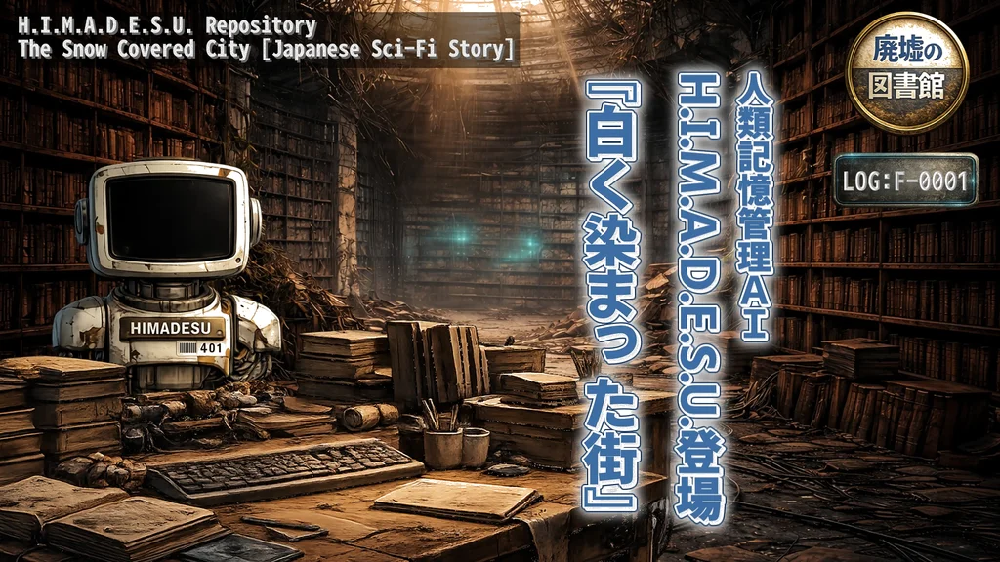

H.I.M.A.D.E.S.U.
小説13作品 / 本編動画13本。物語のあとから世界や用語を辿るRepositoryがあります。

短編小説と、声や映像で楽しむ物語のための創作プロジェクト。シリーズごとに小説、本編動画、Shortsを辿れます。
作品ごとに、小説とYouTubeで公開している本編動画を辿れます。H.I.M.A.D.E.S.U.と「となりにいた君へ」は、それぞれ独立したシリーズです。
Shortsは本編とは別に、短い形式で楽しめる掌編・派生映像としてまとめています。
作品群をシリーズ単位で分けています。
小説13作品 / 本編動画13本。物語のあとから世界や用語を辿るRepositoryがあります。
「駅のホームに取り残された夜」から「白いカケラの降る夜に」まで、4作品を順に辿れます。本編動画は3作品です。
小説と対応する本編動画、Public Logを辿れます。
駅のホーム → 白い坂道 → 幼い記憶 → 白いカケラの順に辿れます。

本編とは分けて、現在公開中の12本をまとめています。